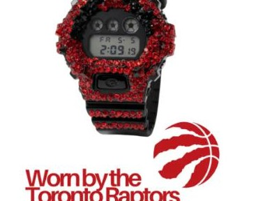
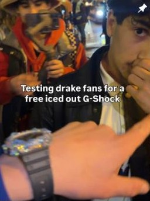
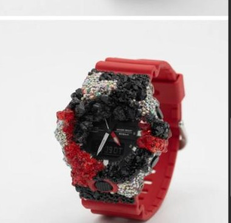
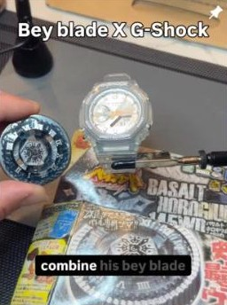
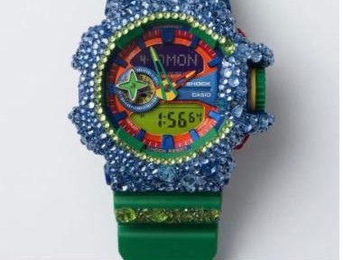

5a1ive made watches for Drake's Iceman.
When Drake turned Toronto blue for the Iceman launch, 5a1ive's custom G-Shocks were in the mix — a campaign the 55555stuff designer worked on with DGTL, alongside viral builds for Yung Fazo, Bloody Osiris and the Toronto Raptors.

Culture@5a1ive is a verified account with 16.2K followers and 161 posts as of July 17, 2026. The Iceman commissions for Drake and Adonis are per DGTL, which co-managed the project; the album's Toronto rollout is widely reported.
In May 2026, Drake turned his hometown into a billboard for Iceman — the CN Tower washed icy blue, an ice sculpture downtown, a private release party at Casa Loma. Woven into that rollout was a smaller, Toronto-made detail: custom G-Shocks by 5a1ive, the designer behind 55555stuff, on a campaign he worked on together with DGTL.
It's the clearest sign yet of how far a 5a1ive piece travels. As part of the Iceman launch, the studio produced custom builds tied to Drake's world — including pieces made for Drake and for his son Adonis — the kind of hometown co-sign a Toronto maker doesn't buy but earns. (The family commissions are per DGTL, which co-managed the project.) It's a long way from a Shopify store, and it happened without a single traditional ad.
A launch built in Toronto, for Toronto
The Iceman campaign was engineered as a hometown moment — Drake filmed at Mayor Olivia Chow's desk in City Hall, the tower lit blue, the whole city in on it. Dropping a local custom-watch designer into that rollout is on-brand for both sides: Drake's Toronto-first mythology, and 5a1ive's scene-native craft. It's the difference between a placement and a genuine piece of the culture — and 5a1ive has been documenting the Iceman/Drake builds alongside collaborators like Almighty Kishka and Agent Zero.
Drake turned Toronto blue. 5a1ive was in the mix.
— The DGTL Influence view on 5a1iveThe videos that actually move
Even setting Drake aside, 5a1ive's content is the marketing. His pinned reels tell the story: "Testing Drake fans for a free iced out G-Shock," a custom build handed to Yung Fazo, a Bey Blade-fused G-Shock series — plus deliveries like flying an augmented piece to Bloody Osiris for his birthday in Paris and a build worn in Sadboi's music video. The verified @5a1ive account — 16.2K followers and climbing — is really a running highlight reel of pieces landing on the right wrists.
- Custom G-Shocks tied to Drake's Iceman launch — a project co-run with DGTL.
- Pieces commissioned for Drake and his son Adonis (per DGTL).
- Viral reels: 'testing Drake fans,' Yung Fazo, Bloody Osiris in Paris, Sadboi's video.
- A red-crystal build worn by the Toronto Raptors.
This is the DGTL Influence thesis in its purest form: a maker whose product is desirable enough that a city, a scene and its biggest artist carry it for free. The watches are the campaign — and the campaign is Toronto.
The reach, in pieces

Viral
Raptors
Bey Blade Amethyst
Amethyst
RainbowA network people actually trust.
80+ vetted creators, matched to your brand — not bolted on. Let's scope an activation that moves real numbers.